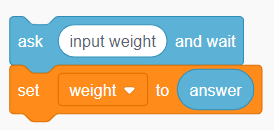
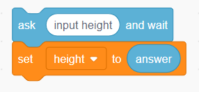
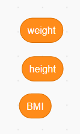
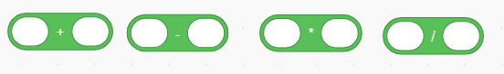
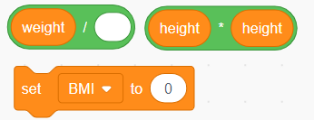
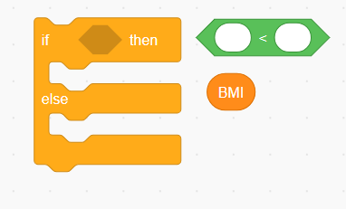

Build your BMI calculator用 Scratch 寫出你的流程圖
Match each flowchart step with a Scratch block. · 把流程圖的每一步，換成 Scratch 方塊。
Input輸入資料
Flowchart parallelograms → Scratch ask + set · 流程圖的輸入框，對應 Scratch 的詢問與設定變數。



Create three variables · 建立三個變數：weight、height、BMI。
Save answer right after each ask; the next answer replaces it. · 每次詢問後立刻儲存回答，否則下一次回答會蓋掉它。
Height uses metres (m). · 身高輸入公尺。
Calculate計算 BMI
Process rectangle → Scratch operators + set BMI · 計算框對應運算方塊與設定 BMI。


Build the bottom part first · 先組合除數：height × height，再放進 weight ÷ (height × height)，最後設定 BMI。
Decide判斷分類
Diamonds → Scratch if / else · 判斷菱形對應 Scratch 的「如果…那麼…否則」。
False → the next decision 下一個判斷

Put the comparison in the hexagon slot. Nest the next if / else inside else until all four categories have an output. · 把比較條件放進六角形格子；在 else 裡接下一個 if / else，直到四種分類都有結果。
Your mission完成 BMI 計算器並繳交
- Start with the green flag. · 用「當綠旗被點擊」開始。
- Ask for weight (kg) and height (m), and store both answers. · 詢問並儲存體重、身高。
- Calculate and store
BMI = weight ÷ (height × height). · 算出 BMI。 - Use if / else to say Underweight, Normal, Overweight or Obesity. · 判斷並說出四種分類。
- Test the boundaries: BMI 18.5, 24 and 27. · 測試三個分界值。
- Press Check 提交批改, fix it, then Submit 繳交. · 先檢查、修改，再繳交。
The pictures show single blocks. Put them together into your own working program. · 圖片只是方塊提示，請自己拼成能運作的程式。